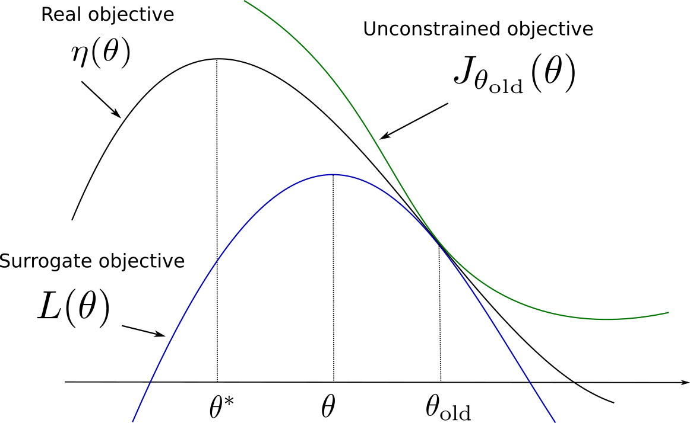
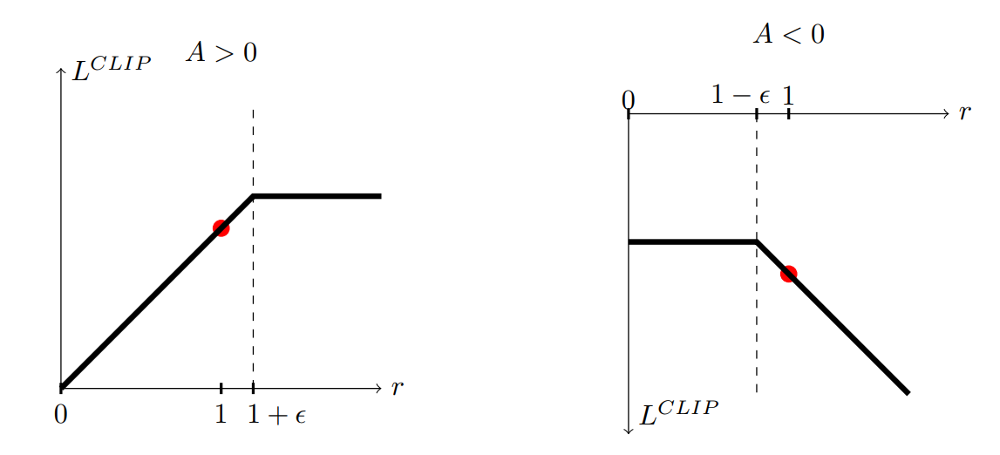

Policy optimization (TRPO, PPO)
Trust Region Policy Optimization (TRPO)
Principle
@Schulman2015 extended the idea of natural gradients to allow their use for non-linear function approximators (e.g. deep networks), as the previous algorithms only worked efficiently for linear approximators. The proposed algorithm, Trust Region Policy Optimization (TRPO), has now been replaced in practice by Proximal Policy Optimization (PPO, see next section) but its novel ideas are important to understand already.
Let’s note the expected return of a policy \(\pi\) as:
\[ \eta(\pi) = \mathbb{E}_{s \sim \rho_\pi, a \sim \pi}[\sum_{t=0}^\infty \gamma^t \, r(s_t, a_t, s_{t+1})] \]
where \(\rho_\pi\) is the discounted visitation frequency distribution (the probability that a state \(s\) will be visited at some point in time by the policy \(\pi\)):
\[ \rho_\pi(s) = P(s_0=s) + \gamma \, P(s_1=s) + \gamma^2 \, P(s_2=s) + \ldots \]
@Kakade2002 had shown that it is possible to relate the expected return of two policies \(\pi_\theta\) and \(\pi_{\theta_\text{old}}\) using advantages (omitting \(\pi\) in the notations):
\[ \eta(\theta) = \eta(\theta_\text{old}) + \mathbb{E}_{s \sim \rho_{\pi_\theta}, a \sim \pi_\theta} [A_{\pi_{\theta_\text{old}}}(s, a)] \]
The advantage \(A_{\pi_{\theta_\text{old}}}(s, a)\) denotes the change in the expected return obtained after \((s, a)\) when using the new policy \(\pi_\theta\), in comparison to the one obtained with the old policy \(\pi_{\theta_\text{old}}\). While this formula seems interesting (it measures how good the new policy is with regard to the average performance of the old policy, so we could optimize directly), it is difficult to estimate as the mathematical expectation depends on state-action pairs generated by the new policy : \(s \sim \rho_{\pi_\theta}, a \sim \pi_\theta\).
@Schulman2015 propose an approximation to this formula, by considering that if the two policies \(\pi_\theta\) and \(\pi_{\theta_\text{old}}\) are not very different from another, one can sample the states from the old distribution:
\[ \eta(\theta) \approx \eta(\theta_\text{old}) + \mathbb{E}_{s \sim \rho_{\pi_{\theta_\text{old}}}, a \sim \pi_\theta} [A_{\pi_{\theta_\text{old}}}(s, a)] \]
One can already recognize the main motivation behind natural gradients: finding a weight update that moves the policy in the right direction (getting more rewards) while keeping the change in the policy distribution as small as possible (to keep the assumption correct).
Let’s now define the following objective function:
\[ J_{\theta_\text{old}}(\theta) = \eta(\theta_\text{old}) + \mathbb{E}_{s \sim \rho_{\pi_{\theta_\text{old}}}, a \sim \pi_\theta} [A_{\pi_{\theta_\text{old}}}(s, a)] \]
It is easy to see that \(J_{\theta_\text{old}}(\theta_\text{old}) = \eta(\theta_\text{old})\) by definition of the advantage, and that its gradient w.r.t to \(\theta\) taken in \(\theta_\text{old}\) is the same as the one of \(\eta(\theta_\text{old})\):
\[ \nabla_\theta J_{\theta_\text{old}}(\theta)|_{\theta = \theta_\text{old}} = \nabla_\theta \eta(\theta)|_{\theta = \theta_\text{old}} \]
This means that, at least locally, one maximization step of \(J_{\theta_\text{old}}(\theta)\) goes in the same direction as maximizing \(\eta(\theta)\) if we do not go too far. \(J\) is called a surrogate objective function: it is not what we want to optimize, but it leads to the same result. TRPO belongs to the class of minorization-majorization algorithms (MM, we first find a local lower bound and then maximize it, iteratively).
Let’s now suppose that we can find its maximum, i.e. a policy \(\pi'\) that maximizes the advantage of each state-action pair over \(\pi_{\theta_\text{old}}\). There would be no guarantee that \(\pi'\) and \(\pi_{\theta_\text{old}}\) are close enough so that the assumption stands. We could therefore make only a small step in its direction and hope for the best:
\[ \pi_\theta(s, a) = (1-\alpha) \, \pi_{\theta_\text{old}}(s, a) + \alpha \, \pi'(s,a) \tag{1}\]
This is the conservative policy iteration method of @Kakade2002, where a bound on the difference between \(\eta(\pi_{\theta_\text{old}})\) and \(J_{\theta_\text{old}}(\theta)\) can be derived.
@Schulman2015 propose to penalize instead the objective function by the KL divergence between the new and old policies. There are basically two ways to penalize an optimization problem:
- Adding a hard constraint on the KL divergence, leading to a constrained optimization problem (where Lagrange methods can be applied):
\[ \text{maximize}_\theta \qquad J_{\theta_\text{old}}(\theta) \\ \qquad \text{subject to} \qquad D_{KL}(\pi_{\theta_\text{old}} || \pi_\theta) \leq \delta \]
- Regularizing the objective function with the KL divergence:
\[ \text{maximize}_\theta \qquad L(\theta) = J_{\theta_\text{old}}(\pi_\theta) - C \, D_{KL}(\pi_{\theta_\text{old}} || \pi_\theta) \]
In the first case, we force the KL divergence to stay below a certain threshold. In the second case, we penalize solutions that would maximize \(J_{\theta_\text{old}}(\theta)\) but would be too different from the previous policy. In both cases, we want to find a policy \(\pi_\theta\) maximizing the expected return (the objective), but which is still close (in terms of KL divergence) from the current one. Both methods are however sensible to the choice of the parameters \(\delta\) and \(C\).
Formally, the KL divergence \(D_{KL}(\pi_{\theta_\text{old}} || \pi_\theta)\) should be the maximum KL divergence over the state space:
\[ D^\text{max}_{KL}(\pi_{\theta_\text{old}} || \pi_\theta) = \max_s D_{KL}(\pi_{\theta_\text{old}}(s, .) || \pi_\theta(s, .)) \]
This maximum KL divergence over the state space would be very hard to compute. Empirical evaluations showed however that it is safe to use the mean KL divergence, or even to sample it:
\[ \bar{D}_{KL}(\pi_{\theta_\text{old}} || \pi_\theta) = \mathbb{E}_s [D_{KL}(\pi_{\theta_\text{old}}(s, .) || \pi_\theta(s, .))] \approx \frac{1}{N} \sum_{i=1}^N D_{KL}(\pi_{\theta_\text{old}}(s_i, .) || \pi_\theta(s_i, .)) \]
Trust regions

Before diving further into how these optimization problems can be solved, let’s wonder why the algorithm is called trust region policy optimization using the regularized objective. Figure 1 illustrates the idea. The “real” objective function \(\eta(\theta)\) should be maximized (with gradient descent or similar) starting from the parameters \(\theta_\text{old}\). We cannot estimate the objective function directly, so we build a surrogate objective function \(L(\theta) = J_{\theta_\text{old}} (\theta) - C \, D_{KL}(\pi_{\theta_\text{old}} || \pi_\theta)\). We know that:
- The two objectives have the same value in \(\theta_\text{old}\): \[ L(\theta_\text{old}) = J_{\theta_\text{old}}(\theta_\text{old}) - C \, D_{KL}(\pi_{\theta_\text{old}} || \pi_{\theta_\text{old}}) = \eta(\theta_\text{old}) \]
- Their gradient w.r.t \(\theta\) are the same in \(\theta_\text{old}\): \[ \nabla_\theta L(\theta)|_{\theta = \theta_\text{old}} = \nabla_\theta \eta(\theta)|_{\theta = \theta_\text{old}} \]
- The surrogate objective is always smaller than the real objective, as the KL divergence is positive: \[ \eta(\theta) \geq J_{\theta_\text{old}}(\theta) - C \, D_{KL}(\pi_{\theta_\text{old}} || \pi_\theta) \]
Under these conditions, the surrogate objective is also called a lower bound of the primary objective. The interesting fact is that the value of \(\theta\) that maximizes \(L(\theta)\) is at the same time:
- A big step in the parameter space towards the maximum of \(\eta(\theta)\), as \(\theta\) and \(\theta_\text{old}\) can be very different.
- A small step in the policy distribution space, as the KL divergence between the previous and the new policies is kept small.
Exactly what we needed! The parameter region around \(\theta_\text{old}\) where the KL divergence is kept small is called the trust region. This means that we can safely take big optimization steps (e.g. with a high learning rate or even analytically) without risking to violate the initial assumptions.
Sample-based formulation
Although the theoretical proofs in @Schulman2015 used the regularized optimization method, the practical implementation uses the constrained optimization problem:
\[ \text{maximize}_\theta \qquad J_{\theta_\text{old}}(\theta) = \eta(\theta_\text{old}) + \mathbb{E}_{s \sim \rho_{\pi_{\theta_\text{old}}}, a \sim \pi_\theta} [A_{\pi_{\theta_\text{old}}}(s, a)] \\ \qquad \text{subject to} \qquad D_{KL}(\pi_{\theta_\text{old}} || \pi_\theta) \leq \delta \]
The first thing to notice is that \(\eta(\theta_\text{old})\) does not depend on \(\theta\), so it is constant in the optimization problem. We only need to maximize the advantage of the actions taken by \(\pi_\theta\) in each state visited by \(\pi_{\theta_\text{old}}\). The problem is that \(\pi_\theta\) is what we search, so we can not sample actions from it. The solution is to use importance sampling to allow sampling actions from \(\pi_{\theta_\text{old}}\). This is possible as long as we correct the objective with the importance sampling weight:
\[ \text{maximize}_\theta \qquad \mathbb{E}_{s \sim \rho_{\pi_{\theta_\text{old}}}, a \sim \pi_{\theta_\text{old}}} [\frac{\pi_\theta(s, a)}{\pi_{\theta_\text{old}}(s, a)} \, A_{\pi_{\theta_\text{old}}}(s, a)] \\ \qquad \text{subject to} \qquad D_{KL}(\pi_{\theta_\text{old}} || \pi_\theta) \leq \delta \]
Now that states and actions are generated by the old policy, we can safely sample many trajectories using \(\pi_{\theta_\text{old}}\) (@Schulman2015 proposes two methods called single path and Vine, but we ignore it here), compute the advantages of all state-action pairs (using real rewards along the trajectories), form the surrogate objective function and optimize it using second-order optimization methods.
One last thing to notice is that the advantages \(A_{\pi_{\theta_\text{old}}}(s, a) = Q_{\pi_{\theta_\text{old}}}(s, a) - V_{\pi_{\theta_\text{old}}}(s)\) depend on the value of the states encountered by \(\pi_{\theta_\text{old}}\). The state values do not depend on the policies, they are constant for each optimization step, so they can also be safely removed:
\[ \text{maximize}_\theta \qquad \mathbb{E}_{s \sim \rho_{\pi_{\theta_\text{old}}}, a \sim \pi_{\theta_\text{old}}} [\frac{\pi_\theta(s, a)}{\pi_{\theta_\text{old}}(s, a)} \, Q_{\pi_{\theta_\text{old}}}(s, a)] \\ \qquad \text{subject to} \qquad D_{KL}(\pi_{\theta_\text{old}} || \pi_\theta) \leq \delta \]
Here we go, that’s TRPO. It could seem a bit disappointing to come up with such a simple formulation (find a policy which maximizes the Q-value of sampled actions while being not too different from the previous one) after so many mathematical steps, but that is also the beauty of it: not only it works, but it is guaranteed to work. With TRPO, each optimization step brings the policy closer from an optimum, what is called monotonic improvement.
Practical implementation
Now, how do we solve the constrained optimization problem? And what is the link with natural gradients?
To solve constrained optimization problems, we can form a Lagrange function with an additional parameter \(\lambda\) and search for its maximum:
\[ \mathcal{L}(\theta, \lambda) = J_{\theta_\text{old}}(\theta) - \lambda \, (D_{KL}(\pi_{\theta_\text{old}} || \pi_\theta) - \delta) \]
Notice how close the Lagrange function is from the regularized problem used in the theory. We can form a first-order approximation of \(J_{\theta_\text{old}}(\theta)\):
\[ J_{\theta_\text{old}}(\theta) = \nabla_\theta J_{\theta_\text{old}}(\theta) \, (\theta- \theta_\text{old}) \]
as \(J_{\theta_\text{old}}(\theta_\text{old}) = 0\). \(g = \nabla_\theta J_{\theta_\text{old}}(\theta)\) is the now familiar policy gradient with importance sampling. Higher-order terms do not matter, as they are going to be dominated by the KL divergence term.
We will use a second-order approximation of the KL divergence term using the Fisher Information Matrix:
\[ D_{KL}(\pi_{\theta_\text{old}} || \pi_\theta) = (\theta- \theta_\text{old})^T \, F(\theta_\text{old}) \, (\theta- \theta_\text{old}) \]
We get the following Lagrangian function:
\[ \mathcal{L}(\theta, \lambda) = \nabla_\theta J_{\theta_\text{old}}(\theta) \, (\theta- \theta_\text{old}) - \lambda \, (\theta- \theta_\text{old})^T \, F(\theta_\text{old}) \, (\theta- \theta_\text{old}) \]
which is quadratic in \(\Delta \theta = \theta- \theta_\text{old}\). It has therefore a unique maximum, characterized by a first-order derivative equal to 0:
\[ \nabla_\theta J_{\theta_\text{old}}(\theta) = \lambda \, F(\theta_\text{old}) \, \Delta \theta \]
or:
\[ \Delta \theta = \frac{1}{\lambda} \, F(\theta_\text{old})^{-1} \, \nabla_\theta J_{\theta_\text{old}}(\theta) \]
which is the natural gradient descent! The size of the step \(\frac{1}{\lambda}\) still has to be determined, but it can also be replaced by a fixed hyperparameter.
The main problem is now to compute and inverse the Fisher information matrix, which is quadratic with the number of parameters \(\theta\), i.e. with the number of weights in the NN. @Schulman2015 proposes to used conjugate gradients to iteratively approximate the Fisher, a second-order method which will not be presented here (see https://www.cs.cmu.edu/~quake-papers/painless-conjugate-gradient.pdf for a detailed introduction). After the conjugate gradient optimization step, the constraint \(D_{KL}(\pi_{\theta_\text{old}} || \pi_\theta) \leq \delta\) is however not ensured anymore, so a line search is made as in Equation 1 until that criteria is met.
Summary
TRPO is a policy gradient method using natural gradients to monotonically improve the expected return associated to the policy. As a minorization-maximization (MM) method, it uses a surrogate objective function (a lower bound on the expected return) to iteratively change the parameters of the policy using large steps, but without changing the policy too much (as measured by the KL divergence). Its main advantage over DDPG is that it is much less sensible to the choice of the learning rate.
However, it has several limitations:
- It is hard to use with neural networks having multiple outputs (e.g. the policy and the value function, as in actor-critic methods) as natural gradients are dependent on the policy distribution and its relationship with the parameters.
- It works well when the NN has only fully-connected layers, but empirically performs poorly on tasks requiring convolutional layers or recurrent layers.
- The use of conjugate gradients makes the implementation much more complicated and less flexible than regular SGD.
- http://178.79.149.207/posts/trpo.html
- https://towardsdatascience.com/introduction-to-various-reinforcement-learning-algorithms-part-ii-trpo-ppo-87f2c5919bb9
- https://medium.com/@sanketgujar95/trust-region-policy-optimization-trpo-and-proximal-policy-optimization-ppo-e6e7075f39ed
- https://www.depthfirstlearning.com/2018/TRPO
- http://rll.berkeley.edu/deeprlcoursesp17/docs/lec5.pdf
Proximal Policy Optimization (PPO)
Proximal Policy Optimization (PPO) was proposed by @Schulman2017 to overcome the problems of TRPO (complexity, inability to share parameters or to use complex NN architectures) while increasing the range of tasks learnable by the system (compared to DQN) and improving the sample complexity (compared to online PG methods, which perform only one update per step).
For that, they investigated various surrogate objectives (lower bounds) that could be solved using first-order optimization techniques (gradient descent). Let’s rewrite the surrogate loss of TRPO in the following manner:
\[ L^\text{CPI}(\theta) = \mathbb{E}_{t} [\frac{\pi_\theta(s_t, a_t)}{\pi_{\theta_\text{old}}(s_t, a_t)} \, A_{\pi_{\theta_\text{old}}}(s_t, a_t)] = \mathbb{E}_{t} [\rho_t(\theta) \, A_{\pi_{\theta_\text{old}}}(s_t, a_t)] \]
by making the dependency over time explicit and noting the importance sampling weight \(\rho_t(\theta)\). The superscript CPI refers to conservative policy iteration [@Kakade2002]. Without a constraint, the maximization of \(L^\text{CPI}\) would lead to an excessively large policy updates. The authors searched how to modify the objective, in order to penalize changes to the policy that make \(\rho_t(\theta)\) very different from 1, i.e. where the KL divergence between the new and old policies would become high. They ended up with the following surrogate loss:
\[ L^\text{CLIP}(\theta) = \mathbb{E}_{t} [ \min (\rho_t(\theta) \, A_{\pi_{\theta_\text{old}}}(s_t, a_t), \text{clip}(\rho_t(\theta) , 1- \epsilon, 1+\epsilon) \, A_{\pi_{\theta_\text{old}}}(s_t, a_t)] \]
The left part of the min operator is the surrogate objective of TRPO \(L^\text{CPI}(\theta)\). The right part restricts the importance sampling weight between \(1-\epsilon\) and \(1 +\epsilon\). Let’s consider two cases (depicted on Figure 2):

the transition \(s_t, a_t\) has a positive advantage, i.e. it is a better action than expected. The probability of selecting that action again should be increased, i.e. \(\pi_\theta(s_t, a_t) > \pi_{\theta_\text{old}}(s_t, a_t)\). However, the importance sampling weight could become very high (a change from 0.01 to 0.05 is a ration of \(\rho_t(\theta) = 5\)). In that case, \(\rho_t(\theta)\) will be clipped to \(1+\epsilon\), for example 1.2. As a consequence, the parameters \(\theta\) will move in the right direction, but the distance between the new and the old policies will stay small.
the transition \(s_t, a_t\) has a negative advantage, i.e. it is a worse action than expected. Its probability will be decreased and the importance sampling weight might become much smaller than 1. Clipping it to \(1-\epsilon\) avoids drastic changes to the policy, while still going in the right direction.
Finally, they take the minimum of the clipped and unclipped objective, so that the final objective is a lower bound of the unclipped objective. In the original paper, they use generalized advantage estimation (GAE, section ?@sec-GAE) to estimate \(A_{\pi_{\theta_\text{old}}}(s_t, a_t)\), but anything could be used (n-steps, etc). Transitions are sampled by multiple actors in parallel, as in A2C.
The pseudo-algorithm of PPO is as follows:
The main advantage of PPO with respect to TRPO is its simplicity: the clipped objective can be directly maximized using first-order methods like stochastic gradient descent or Adam. It does not depend on assumptions about the parameter space: CNNs and RNNs can be used for the policy. It is sample-efficient, as several epochs of parameter updates are performed between two transition samplings: the policy network therefore needs less fresh samples that strictly on-policy algorithms to converge.
The only drawbacks of PPO is that there no convergence guarantee (although in practice it converges more often than other state-of-the-art methods) and that the right value for \(\epsilon\) has to be determined. PPO has improved the state-of-the-art on Atari games and Mujoco robotic tasks. It has become the go-to method for continuous control problems.
- More explanations and demos from OpenAI: https://blog.openai.com/openai-baselines-ppo